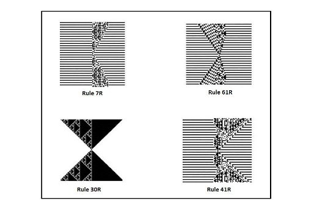
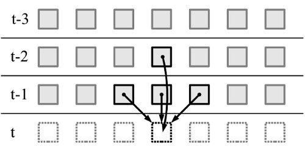
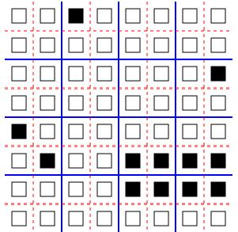

Reversible Computing and Reversible Cellular Automata
1. Introduction to reversibility
Let us consider a system which can be described by a set of rules or properties. The system can be of any type, for example logical, mathematical, or physical. When our system undergoes a series of transformations that change it from an initial to a final state, we say it was affected by a process. This shifting of states means changing one or more of the variables that mathematically describe the overall state of the system. For example, in the case of thermodynamic systems, among the 'state variables' changed during a process, one could list temperature, pressure, enthalpy, volume or mass, among others. Reversibility refers to the ability of bringing a system back to its initial state knowing only the final state, that induced by the process it underwent.
2. Reversible computing
In computational theory, the concept raised a model known as Reversible Computing. In this model, we are concerned with certain types of reversibility of a computational process. We can choose to represent possible transitions within a system using a number of transition functions. Reversible systems require a one-to-one mapping between 'predecessors' and 'successors' via these transition functions, such that we can always find the initial state which produced a final state using a certain transformation. The two types of reversibility we are concerned with are physical and logical.
3. Physical reversibility
Physical reversibility is one type of reversibility which is of interest for this field. A process is said to be physically reversible if it is isentropic, i.e it does not change the entropy of the system (entropy is a measure of how evenly energy is distributed in a system, or in other words, a measure of the energy not available for work during a process). In practice, however,no non-stationary physical process can be perfectly reversible. On the other hand, in a system with well defined rules and lacking interactions with external environments, there is no limit on how close it can approach perfect reversibility. According to the von Neumann - Landauer limit, there is a lower bound on how much energy is required to change one single bit of information. Albeit challenged in recent years, the limit is still accepted as a valid physical law. Therefore, one of the main purposes of studying (physical) computational reversibility is to defy this inferior limit and try to obtain a better efficiency for computers.
4. Logical reversibility
The second type of reversibility we are concerned with is logical reversibility. Invariably, any computer deals with processes that involve taking some input values and producing output values. However, most of these operations, such as deletions, insertions, overwriting, dispose of certain information related to the earlier history of the program or the system which operates them. In this sense, we say the system is logically irreversible - the aforementioned transition functions mapping initial states to final states are not one-to-one. Despite the fact that some specific operations can be reversed, Landauer argued that irreversibility cannot be avoided in general situations, proving this similarly using the von Neumann - Landauer limit.
As a conclusion, physical and logical reversibility are only subtly distinct and intertwined, since each relies, at least to some extent, on the other to justify its own self. Through them, reversible computing becomes an interesting and highly unconventional topic, which could bring interesting, even revolutionary results.
Reversible Cellular Automata
|  | There are some cellular automata for which each configuration has an unique preceding configuration - such CAs are called reversible, microscopically reversible or invertible. RCA actually represent a natural model of Reversible Computing and are analogous with a number of natural processes. The figure below shows examples of reversible CA by means of Wolfram's rules. |
Although some of the 'state variables' analogous to physical systems, such as locality or uniformity, are present and taken as granted within Cellular Automata, reversibility itself is not built-in - one has to program it. Initially, it was thought that by introducing reversibility, key properties such as universality in computation and construction would be lost, but this is not the case. Moreover, techniques have been developed so that one can construct systematically RCA which display perfect reversibility.
Firstly, we must establish that a Cellular Automaton is a deterministic system - this means that any state the system may be in can only generate one successor state according to the given set of rules. Intuitively, for a CA to be reversible, we need a rule, an inverse rule, that would perform backward-determinism as well. This second rule is, in the vast majority of cases, different from the original rule, perhaps with the exception of trivial CAs. This is equivalent to saying that by mapping the set of rules that perform transformations to a mathematical function, that function would be a bijection. Theoretically, it is possible to decide whether two given rules are inverses of each other, but, on the other hand, there are no ways of determining the inverse (if it exists) of a single given rule. We will now investigate two important known methods for constructing invertible Cellular Automata.
1. The second order technique
This method relies on storing the last two states of a cell, not just the immediately previous state. These two pieces of information alone are sufficient for producing a reversible computation. Therefore, a cell's state at a moment t+1 depends on the cell's neighbourhood's state at time t and its own state at t-1. This concept is explained very simply by Tommaso Toffoli and Norman Margolus in one of their most important works:
[..] if we cut a single frame out of the movie of a flying bullet, we have no way of knowing what the bullet is doing. However, if we are given two consecutive frames, then we can figure out the bullet's trajectory. That is, from these two frames, interpreted as the bullet's "past" and "present" positions, we can construct a third frame giving the bullet's "future" position; this procedure can be iterated. The laws of Newtonian mechanics are such that, if for some reason the two frames got exchanged, we would end up figuring the bullet's trajectory < in reverse >
. Cellular Automata Machines: A new environment for modelling (Tommaso Toffoli, Norman Margolus), 1987, The MIT Press, ISBN 0-262-20060-0, page 147|  | Simple 1D CA construction rules and configurations can be extended to also support reversibility. An illustration of how the second order technique works for a 1D CA is shown here. |
2. The partitioning technique
The previous technique which we considered involved using mathematical functions to describe how cells evolve using information from their two last states. Essentially, the function we need to describe state transitions would perform certain calculations, mostly on real numbers. The problem with real number operations is that they involve a certain degree of information loss, through procedures like rounding, truncating, squaring and others. The result, on the other hand, involved no information loss since it guarantees invertibility. The partitioning technique offers a different and more straightforward and obvious way of generating reversible cellular automata.
|  |
Perhaps the most famous partitioning scheme is the Margolus neighbourhood. Firstly, this involves partitioning the grid of cells into a collection of finite, uniform and disjoint blocks (most commonly 2x2 blocks). It then uses a 'block rule', applicable to all the resulted blocks, which updates them as a whole, rather than as individual cells, like in traditional Cellular Automata. Moreover, no information is exchanged between neighbouring blocks nor do the blocks overlap. Lastly, and perhaps most important, we need to change the partition from step to step, so that we will not end up with a number of isolated 2x2 systems. |
Usually, we consider two alternating types of steps, when we use either the 'even' grid (the blue lines above) or the 'odd' grid (the red dotted lines). Therefore, a cell may be considered as within an odd-aligned block or an even-aligned block, depending on the nature of the four lines delimiting it.
This form of dealing with CA means that at each time, the block has as inputs the four states of the cells it contains and produces exactly outputs. Therefore, this cellular automaton is made out of sub-divisions which produce as many outputs as inputs they require - it is information-lossless.
For a rule of a Margolus neighbourhood to be invertible, it needs to establish a one-to-one correspondence between the old and new states of a 2x2 block. For example, in a CA with two states and partitioned into 2x2 blocks, such a rule requires 16 mappings from old to new states. After we have this invertible rule, the only action we need to perform to revert our CA is to simply perform the 'inverse' steps in reverted order, taking care to consider the appropriate partition each time (either odd-aligned or even-aligned blocks).
Applications
We have discussed two ways of obtaining reversible CA quite easily. But what exactly are the applications of Reversible Cellular Automata? Among them we can count:| |